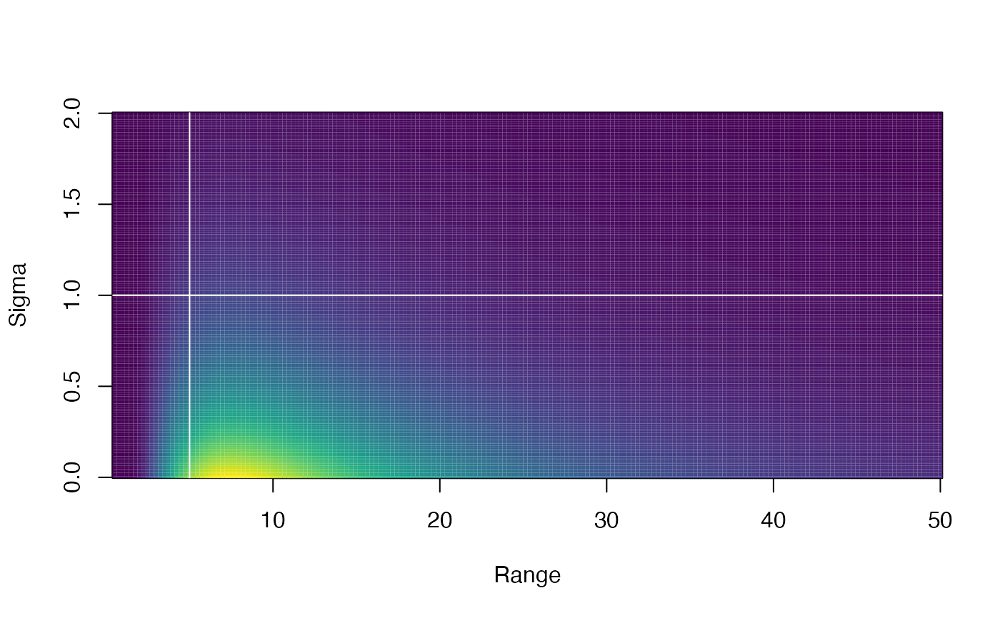
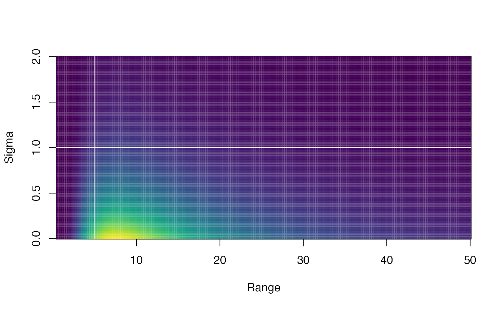

Plot PC Matern priors
Arguments
- range_gt
A value one expects the spatial or spatiotemporal range is greater than with
1 - range_probprobability.- sigma_lt
A value one expects the spatial or spatiotemporal marginal standard deviation (
sigma_Oorsigma_Einternally) is less than with1 - sigma_probprobability.- range_prob
Probability. See description for
range_gt.- sigma_prob
Probability. See description for
sigma_lt.- range_lims
Plot range variable limits.
- sigma_lims
Plot sigma variable limits.
- plot
Logical controlling whether plot is drawn (defaults to
TRUE).
Value
A plot from image().
Invisibly returns the underlying matrix data. The rows are the sigmas. The
columns are the ranges. Column and row names are provided.
See also
Examples
plot_pc_matern(range_gt = 5, sigma_lt = 1)
 plot_pc_matern(range_gt = 5, sigma_lt = 10)
plot_pc_matern(range_gt = 5, sigma_lt = 10)
 plot_pc_matern(range_gt = 5, sigma_lt = 1, sigma_prob = 0.2)

plot_pc_matern(range_gt = 5, sigma_lt = 1, range_prob = 0.2)
plot_pc_matern(range_gt = 5, sigma_lt = 1, sigma_prob = 0.2)

plot_pc_matern(range_gt = 5, sigma_lt = 1, range_prob = 0.2)